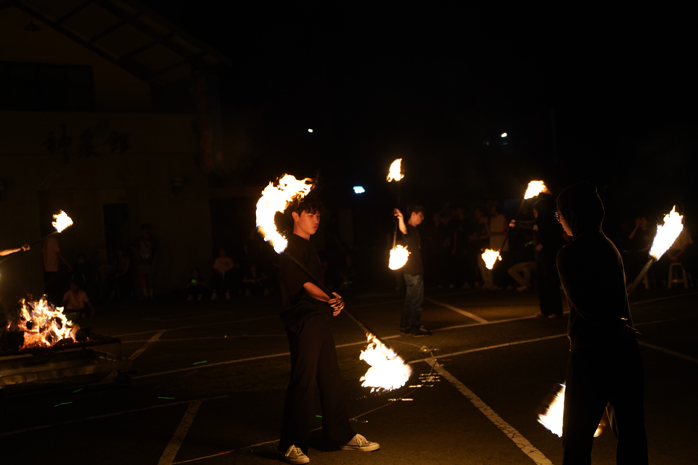
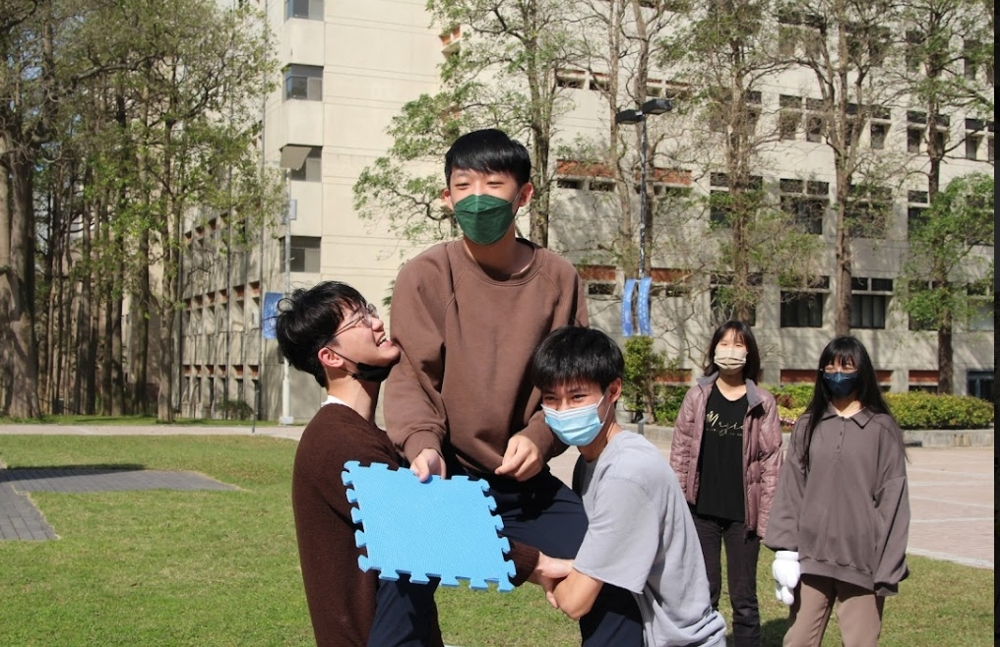
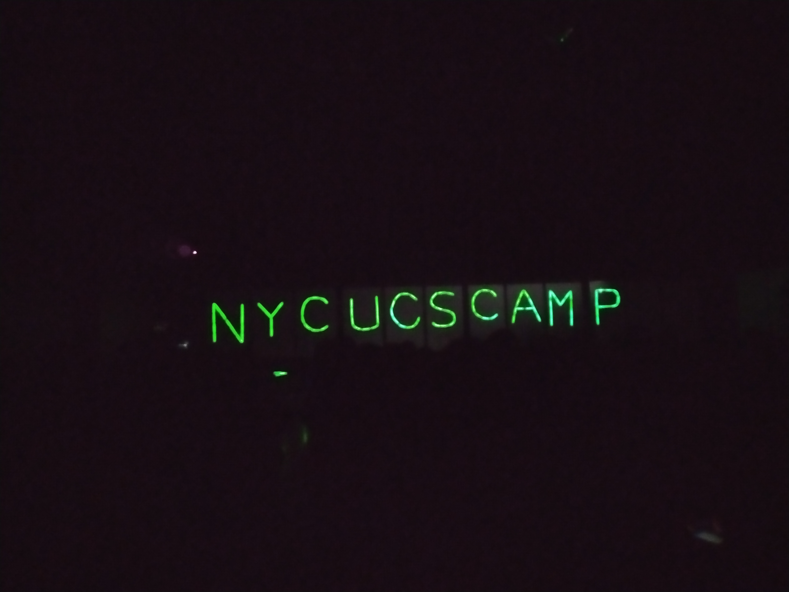
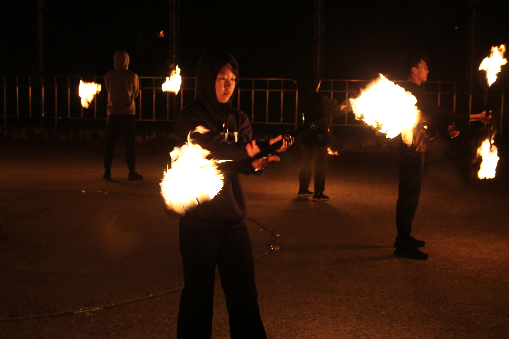
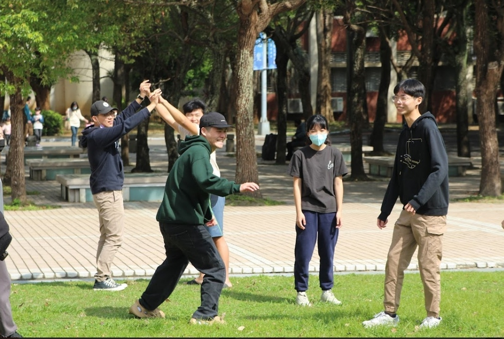
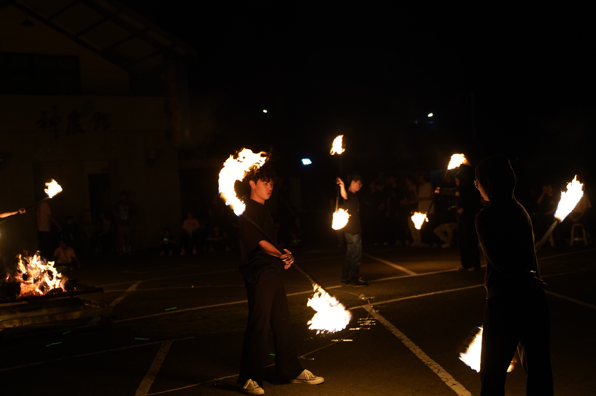
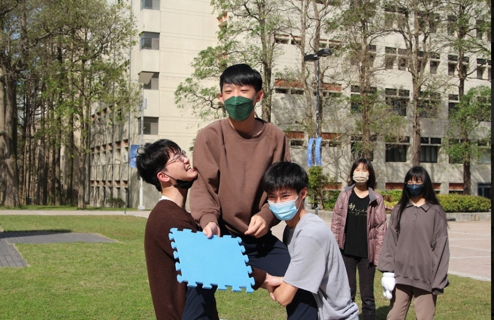
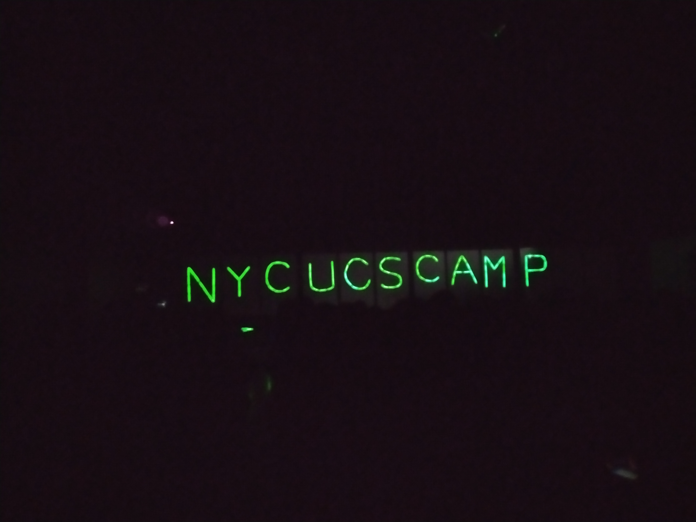
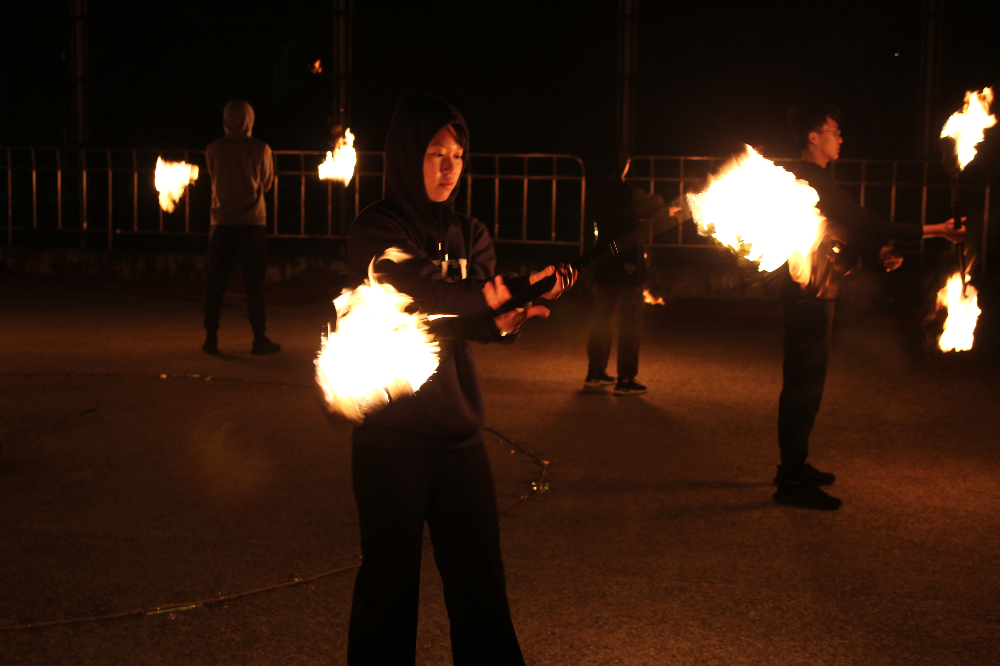
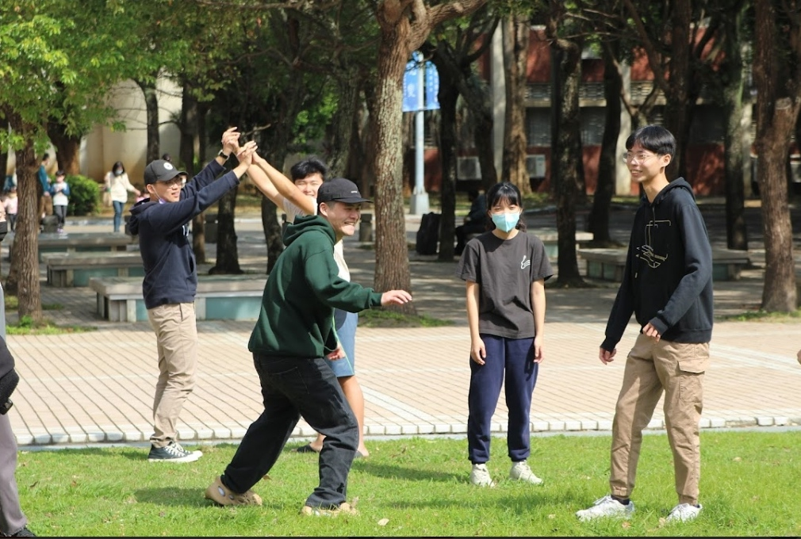

I'm really glad to have met such a great group of people in college. We play and have fun together, and we can discuss any problems as well. I originally thought I'd become a loner in university, but I ended up joining a bunch of activities and almost becoming an event monkey!
Department Camp
The department camp is the first event organized by everyone in college. It's run by second-year students and first-year students, giving the seniors a chance to come together again, have fun, and take a break from the lab and computers. It's also an opportunity to teach first-years how to organize an event, helping to nurture future event planners.
My impression after attending the department camp as a first-year student was that the seniors seemed really intimidating—everyone acted like they were crazy! But as I got to know them better, I realized that one of the great benefits of participating in the camp was meeting the seniors. It was a rare opportunity to connect with upperclassmen, not just my own cohort. I could hear about what they were doing, ask them about my own uncertainties, and know that I could reach out for help in the future. Overall, getting to know more people is always a plus.
Returning to the department camp as a second-year student, I took on the role of teaching fire stick performance. This change in position allowed me to notice many things I hadn't before. Since most of the other administrative members were familiar faces, I gained a better understanding of how the camp operated. I no longer felt like I was just following orders blindly, like in my first year; I was more aware of what was going on around me.
Orientation Camp
The orientation camp is definitely an event for the new students! I served as the art and publicity coordinator, responsible for making props and acting as a team leader during the camp. Although organizing these events is always exhausting, I truly gain something from each experience, and the process is filled with laughter. During the camp, chatting with the first-year students felt like looking back at my past self—just as lost and uncertain, not knowing what to do. So, I shared my experiences with the team members, hoping my insights could help them a little.
CS Camp
This is the largest event in our department, open to everyone from freshmen to graduate students, and it’s a summer camp for high school students. With so many participants, it’s also the best opportunity to meet upperclassmen. Since many of the organizers have run countless camps before, the Computer Science Camp is well-established and highly organized, with the highest standards. Although it was interrupted by the pandemic and had to be held online for a time, I'm glad it returned to an in-person format last year, allowing this tradition to continue.
It truly feels like a dream—a summer dream that belongs to everyone. Some people take time out from the lab to practice, while others rush back from work for meetings. Everyone is putting in their effort for this camp, and seeing the final results—the happy smiles of the team members—is genuinely moving.